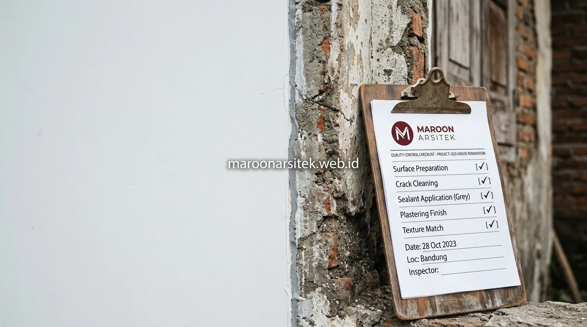

Jasa renovasi rumah menangani permasalahan umum pada bangunan lama, seperti kebocoran atap, retak rambut pada dinding, dan fasad yang sudah usang, melalui perbaikan menyeluruh yang tidak hanya menutupi gejala namun mengatasi akar masalahnya. Maroon Arsitek melalui layanan jasa renovasi rumah profesional menangani renovasi rumah di wilayah Jakarta dengan pendekatan yang mempertimbangkan kondisi struktur lama sebelum menentukan solusi perbaikan yang tepat.
Rumah yang sudah berusia belasan hingga puluhan tahun umumnya menghadapi kombinasi masalah struktural dan estetika sekaligus, sehingga penanganan yang hanya menyenyuh permukaan tanpa mengatasi penyebab utama sering membuat masalah kembali muncul dalam waktu singkat. Bagian berikut menguraikan pendekatan penanganan tiga masalah utama tersebut beserta solusi renovasi yang diterapkan.
Penanganan Kebocoran Atap hingga ke Akar Permasalahan
Penanganan kebocoran atap dilakukan dengan menelusuri sumber masalah terlebih dahulu, baik akibat kerusakan pada penutup atap, talang yang tersumbat, maupun struktur rangka yang sudah mulai lapuk, sebelum menentukan metode perbaikan yang sesuai. Pendekatan ini mencegah kebocoran muncul kembali setelah perbaikan dilakukan.
Pemeriksaan dilakukan pada seluruh sistem atap, termasuk kemiringan yang memengaruhi aliran air hujan, kondisi flashing pada pertemuan atap dan dinding, serta material penutup atap yang mungkin sudah mengalami penurunan kualitas akibat usia pemakaian.
Perbaikan yang dilakukan tanpa menelusuri sumber masalah secara menyeluruh berisiko hanya menutupi gejala sementara, sehingga kebocoran dapat muncul kembali di titik yang sama maupun titik baru dalam waktu tidak lama setelah perbaikan awal.
Evaluasi Sistem Talang dan Aliran Air sebelum Perbaikan
Kebutuhan solusi jangka panjang untuk kebocoran atap dijawab melalui evaluasi sistem talang dan aliran air secara menyeluruh, memastikan air hujan dapat mengalir dengan baik tanpa genangan yang berpotensi menyebabkan kebocoran berulang.
Evaluasi ini penting dilakukan sebelum mengganti material penutup atap, karena penggantian material tanpa memperbaiki sistem aliran air yang bermasalah tidak akan menyelesaikan akar penyebab kebocoran secara tuntas.
Perbaikan Retak Rambut dengan Metode sesuai Penyebabnya
Retak rambut pada dinding ditangani dengan metode yang disesuaikan penyebabnya, baik akibat penyusutan material, pergerakan struktur ringan, maupun kualitas plesteran yang kurang baik, karena penanganan yang keliru berisiko membuat retak muncul kembali. Identifikasi penyebab menjadi langkah penting sebelum perbaikan dilakukan.
Retak akibat penyusutan material umumnya dapat ditangani dengan pengisian dan pelapisan ulang permukaan dinding, sementara retak yang berkaitan dengan pergerakan struktur memerlukan penanganan lebih mendalam untuk memastikan tidak ada masalah struktural yang lebih serius bersama tim jasa kontraktor rumah kami.
Proses perbaikan mencakup pembersihan area retak, aplikasi material pengisi yang sesuai, hingga finishing ulang agar hasil akhir menyatu dengan permukaan dinding di sekitarnya tanpa meninggalkan bekas perbaikan yang mencolok.

Identifikasi Retak Struktural yang Memerlukan Penanganan Khusus
Kebutuhan keamanan jangka panjang dijawab melalui identifikasi retak yang berpotensi bersifat struktural, berbeda dari retak rambut biasa, sehingga penanganan yang diberikan benar-benar sesuai dengan tingkat keparahan masalah yang ditemukan.
Identifikasi ini penting untuk mencegah penanganan yang hanya bersifat kosmetik pada masalah yang sebenarnya memerlukan perhatian struktural lebih serius, terutama pada rumah dengan usia bangunan yang sudah cukup tua.
Pembaruan Fasad Usang Menjadi Tampilan yang Lebih Segar
Pembaruan fasad rumah lama dilakukan melalui kombinasi perbaikan material yang sudah rusak dan penyegaran tampilan visual, sehingga hasil akhir tidak hanya memperbaiki kerusakan namun juga menghadirkan kesan baru pada keseluruhan bangunan. Pendekatan ini menjawab kebutuhan pemilik rumah yang ingin tampilan rumahnya benar-benar berubah dengan sentuhan perencanaan dari jasa arsitek berpengalaman.
Material fasad yang sudah usang, seperti cat yang mengelupas atau plester yang retak, diperbaiki terlebih dahulu sebelum lapisan finishing baru diaplikasikan, memastikan hasil akhir memiliki daya tahan yang baik dalam jangka panjang.
Penyegaran tampilan dapat mencakup perubahan skema warna, penambahan elemen material baru, atau penyesuaian detail fasad lain yang membantu menghadirkan kesan rumah yang benar-benar diperbarui, bukan sekadar diperbaiki seadanya.
Perbaikan Material sebelum Penyegaran Tampilan Fasad
Kebutuhan hasil akhir yang tahan lama dijawab dengan memperbaiki seluruh kerusakan material fasad terlebih dahulu, sebelum lapisan finishing baru diaplikasikan, agar penyegaran tampilan tidak sekadar menutupi masalah yang belum tuntas ditangani.
Urutan pengerjaan ini memastikan hasil akhir fasad benar-benar solid, tanpa risiko kerusakan yang muncul kembali dalam waktu singkat akibat perbaikan yang hanya bersifat kosmetik pada permukaan luar.